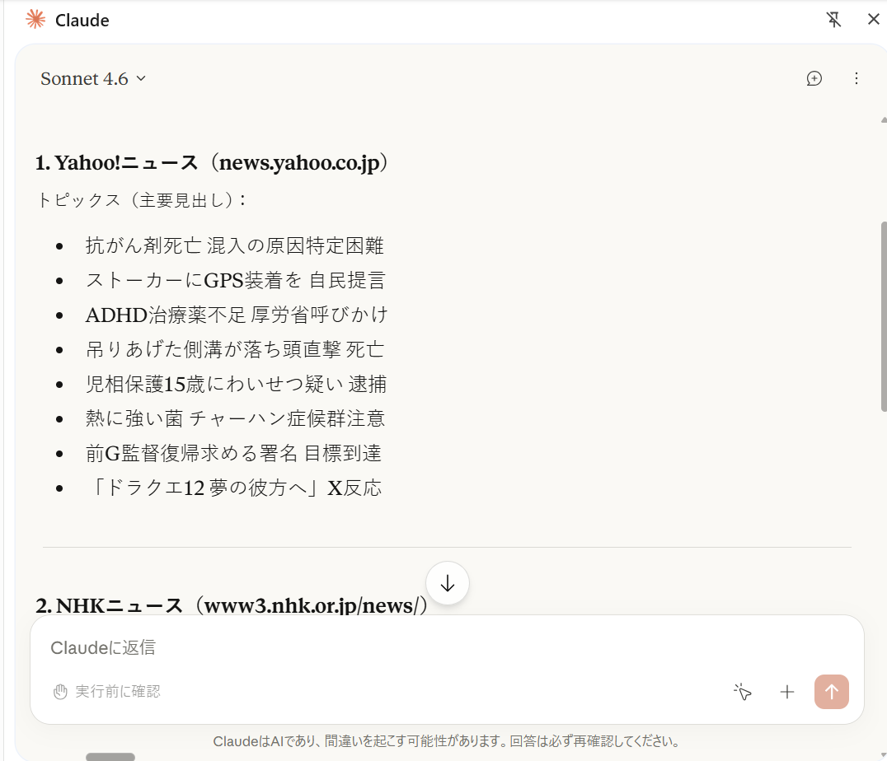
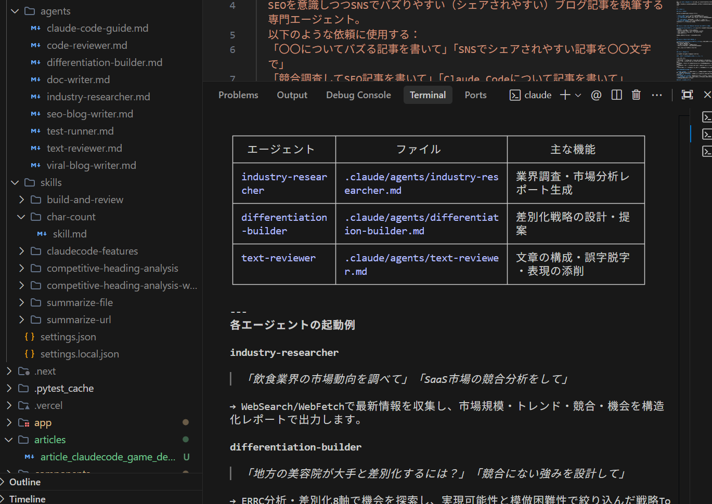

Works

AI × Web Browsing
ニュース収集・要約エージェント
ClaudeがYahoo!ニュース・NHK・朝日新聞など複数サイトを横断収集し、見出し一覧をリアルタイムで要約・整形して出力するAIエージェント。
Claude API
Web Browsing
Sonnet 4.6

CLI Automation
Claude Code CLI リアルタイム収集
Claude Code CLIからターミナル直接実行。複数ニュースソースを即時取得・整形し、見出し一覧をリアルタイムで出力する様子。
Claude Code
CLI
PowerShell

Multi-Agent Architecture
SubAgents + Skills 構成設計
Phase 1
業界調査
industry-researcher
Phase 2
差別化戦略
differentiation-builder
Phase 3
文章添削
text-reviewer
Claude Code の SubAgents 機能を活用し、業界調査 → 差別化戦略構築 → 文章添削を3エージェントが順次バトンを渡して自動実行するパイプライン。VS Code 上でエージェントの設定・起動・実行ログをリアルタイム確認。
Claude Code
SubAgents
Skills
Pipeline

Quality Assurance AI
AI 品質レビュー自動出力
Must Fix
2件
Should Fix
6件
Nice to Have
4件
パイプラインの最終フェーズで text-reviewer エージェントが品質評価レポートを自動生成。Must Fix / Should Fix / Nice to Have の3段階で修正提案を構造化して出力。ブログ記事への活用まで想定したレポートフォーマット。
text-reviewer
Quality Review
Auto Report
About
AI Developer
Claude API・Claude Code を中心に、実務で使えるAIツールやマルチエージェントシステムを設計・開発しています。
自動化パイプライン、情報収集、コンテンツ生成など、業務の現場で価値を発揮するソリューションを構築します。
ClaudeSonnet 4.6
Claude CodeCLI / SDK
SubAgentsMulti-Agent
Next.js16 App Router
TypeScriptStrict Mode
Tailwindv4